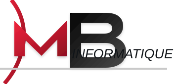

Profil
Waseem Altaweel
Passionné par l'infrastructure réseau, les systèmes et la cybersécurité, je prépare un BTS SIO option SISR avec l'objectif de poursuivre vers un cycle ingénieur informatique.
Parcours
- 2024 - 2026 : BTS SIO option SISR, CCI Campus Strasbourg.
- Depuis juillet 2024 : administrateur systèmes, réseaux et responsable technique chez MB Informatique.
- 2022 - 2024 : Licence Accès Santé, UFR Santé, Université de Besançon.
- 2021 - 2022 : baccalauréat général au lycée Montaigne de Mulhouse.
Objectif
Continuer à progresser en infrastructure, systèmes, réseaux et cybersécurité, puis poursuivre vers un cursus d'ingénieur.
Certification
Certification Cisco CCNA en cours. L'objectif est de consolider mes bases réseau avec une approche plus structurée et professionnelle.
Parcours de professionnalisation
Mon parcours en BTS SIO SISR se construit autour de situations concrètes : comprendre une infrastructure, documenter ce qui est fait, sécuriser les accès et garder une méthode claire lorsque je dois intervenir.
01
Administrer
Postes, serveurs, comptes, services réseau et accès utilisateurs.
02
Sécuriser
Bonnes pratiques, MFA, sauvegardes, segmentation et journalisation.
03
Documenter
Procédures, preuves techniques et dossiers AP3/AP4 pour l'épreuve E6.
Evolution
Avant / après le BTS et l'alternance
CCI Campus AlsaceBTS SIO SISR

MB InformatiqueAlternance en entreprise
Cette comparaison se lit comme une progression : je suis passé d'une passion assez personnelle à une méthode de travail plus structurée, puis à une posture plus autonome et professionnelle.
01
Départ
passion, curiosité, peu de cadre
02
Construction
BTS, entreprise, méthode
03
Résultat
autonomie, technique, posture pro
Aspect
À mon arrivée
Fin de deuxième année
Méthode de travail
Au feelingPeu de prioritésIrrégulier
PriorisationPlanificationDocumentation
Compétences techniques
CuriositéNotions disperséesPeu de pratique
DiagnosticSystèmes-réseauxSupport
Passage à l'action
RegarderSe renseignerHésiter
TesterConfigurerRésoudre
Posture professionnelle
Expérience négativeRepères flousDoutes
SérieuxCommunicationResponsabilités
École et collectif
Difficultés scolairesTravail seulProgression floue
Travail d'équipeMéthode BTSObjectifs clairs
Confiance personnelle
AppréhensionBesoin d'être guidéPeu d'autonomie
AutonomieInitiativeConfiance
Compétences
- Windows Server
- Linux
- Active Directory
- DNS / DHCP
- VLAN
- VPN IPsec
- pfSense
- OpenVPN
- UniFi
- Cisco
- Supervision
- Sauvegarde
- Support technique
- Documentation
- Cybersécurité